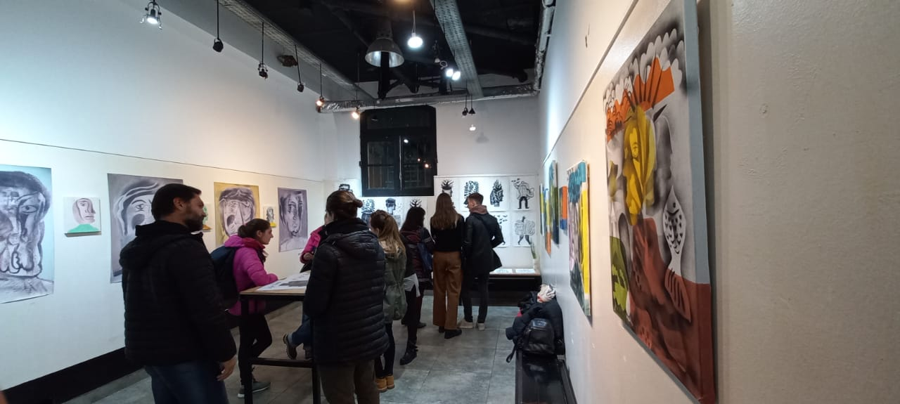

Biografía
“Comencé en el camino del arte en 1992 con estudios más formales en el ámbito del cómic y la historieta, las que luego, lograron abrir un camino a la pintura. Si me preguntan qué es para mí la pintura, es mi más profunda conexión con el mundo …“
Julián A. Rodriguez Vigo. Buenos Aires, junio de 1974, docente, con una vasta trayectoria expositiva que comenzó por el año 1994 hasta la fecha
Sus exposiciones en galerías porteñas, museos nacionales, legislatura de la Ciudad de Buenos Aires, lograron traspasar fronteras y pudo apreciarse su arte en el extranjero como en el Distrito Federal de México. La Habana, Barcelona, New York, San Pablo, y un par de localidades en Perú, entre otras.
Cuenta también con trabajos de ilustración para revistas literarias y culturales, fanzines, afiches de conciertos, obras de teatro, cuentos infantiles, etc.
La relación aleatoria entre objetos, simbología, significación social y personas mediante estas infografías y detalles gráficos, han desarrollado su propia identidad visual.
En sus obras se ve reflejado un alto compromiso social, abordando temas como el derecho al trabajo, la ecología, el racismo, la inmigración, el derecho a la vivienda y los derechos humanos, universos de diferentes razas viven y respiran inmigración en los barcos, en el oleaje, en el mar de collages de superposiciones surgidos y creados por numerosas plantillas
Su cubismo sintético, provoca sensaciones acuáticas y aéreas que tienden a llevarnos al plano de lo onírico, los colores jugando con monocromos en blanco y negro transmiten la simplicidad que se logra con el diseño gráfico o el grabado, generando un clima donde se detiene el tiempo y aparecen diferentes universos que pueden percibirse al mismo tiempo.
El artista logra, mediante las superposiciones de capas, la generación de veladuras y transparencias, en donde toda la creación se expresa en un solo instante.
Estas superposiciones de imágenes de plantillas de cartón y esténcil trabajadas con aerosol y acrílico, vislumbran un juego con el cubismo facetado que se pueden apreciar en sus figuras humanas fragmentadas.
Ese juego de repeticiones nos muestra diferentes superposiciones de imágenes de colores tenues que generan transparencias y veladuras en una misma obra
Aparecen distintas razas en el mismo plano donde conviven partes de la figura humana en estos cuerpos fragmentados, mezclados con colores, formas que van desde nubes lejanas a vegetales, animales o insectos
La naturaleza presente y los fragmentos de cuerpos aparecen de manera fantasmagórica, muestran diversos planos generados por las diferentes texturas, en donde el uso del rojo se sirve solo para destacar algo específico, logrando de esa forma que nuestra atención busque camino dentro de ese mix formado por la yuxtaposición del negro en diferentes matices con los colores pasteles complementarios, análogos y vibrantes.